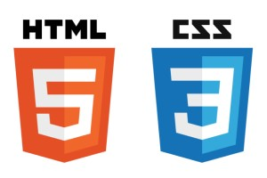

About
First year master's student at Tokyo Metropolitan University, Graduate School of System Design, Department of Computer Science.I'm a member of the Takama lab., where I conduct research on item recommendation using personal values.
I'm a serious person and received an award for outstanding academic achievement from the Faculty of System Design, Tokyo Metropolitan University in the year 2020.
Recently, I have been doing muscle training to maintain my health.
Education
- 2022/04- Master's student, Tokyo Metropolitan University, Graduate School of System Design, Department of System Design, Computer Science
- 2018/04-2022/03 Bachelor's students, Tokyo Metropolitan University, Faculty of System Design, Department of Computer Science
- 2015/04-2018/03 Senior high school student, Kinjyo High School Regular Course
Experience
- 2022/08-2022/08 Rakuten Group, Inc.
I joined in the Futakotamagawa summer camp (5-day internship).
Paper
- K.Nihira, H.Shibata and Y.Takama, Proposal of Personal Value-Based User Modeling Without Attribute Evaluation, The 10th International Symposium on Computational Intelligence and Industrial Applications (ISCIIA2022) Sep.23- Sep.25, 2022, Beijing, China
Others
Skill


Qualfication
- Fundamental Information Technology Engineer Examination (基本情報技術者)
- TOEIC Listening & Reading 775 (2021/01)